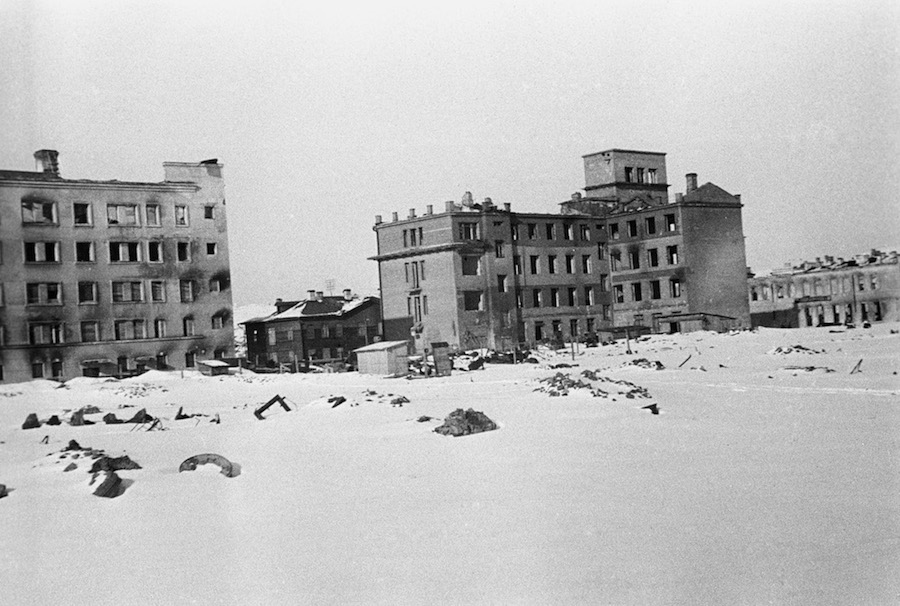

Мурманск — горад герой!
Ваенная гісторыя Мурманска пачалася з наступу ў 1941 году нямецка-фашысцкай арміі адразу па некалькіх кірунках. Для
захопу зямель Савецкага Запаляр'я з боку Нарвегіі і Фінляндыі быў разгорнуты фронт «Нарвегія»

Мурманск - адзін з тых гарадоў, якія сталі прыфрантавой з першых жа дзён вайны. Па колькасці скінутых на горад бомбаў
Мурманск саступае толькі Сталінграду: ён перажыў 792 авіяцыйных налёту, на горад было скінута 185 тыс. Бомбаў. Аднак
Мурманск, найважнейшы для краіны паўночнага порту, выстаяў і працягваў працаваць. Пад рэгулярнымі Авіаналетам жыхары
горада будавалі бамбасховішчы, ажыццяўлялі разгрузку і пагрузку караблёў, выраблялі ваенную тэхніку. За гады вайны
Мурманскі порт прыняў 250 судоў і апрацаваў 2 млн тон розных грузаў.
3 ЭШАЛОНА
з рыбнымі прадуктамі адправілі мурманчане ў асаджаным у Ленінград
25 ТЫС. ЛИТРАЎ
крыві мурманчане здалі падчас вайны

У 1944 годзе Прэзідыум Вярхоўнага Савета СССР заснаваў медаль "За абарону Савецкага Запаляр'я». Горад Мурманск атрымаў
званне горада-героя 6 мая 1985 года. Самым вядомым помнікам, прысвечаным Вялікай Айчыннай вайне ў горадзе-героі
Мурманску, з'яўляецца мемарыял «Абаронцам Савецкага Запаляр'я», які знаходзіцца ў Ленінскім акрузе горада. Помнік быў
адкрыты 19 кастрычніка 1974 гады ў гонар 30-годдзя разгрому нямецка-фашысцкіх войскаў і прысвечаны загінулым героям. У
народзе помнік вядомы пад імем «Алёша». Ён выкананы ў выглядзе 35-метровай фігуры салдата ў плашч-палатцы і з аўтаматам
за плячом. Побач з помнікам размешчаны два зенітных прылады.